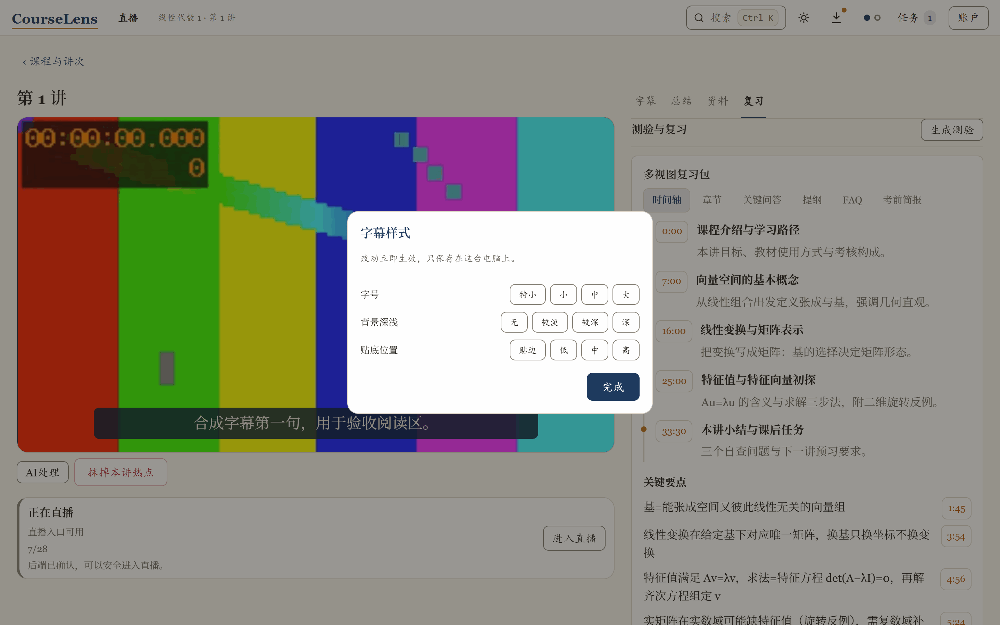
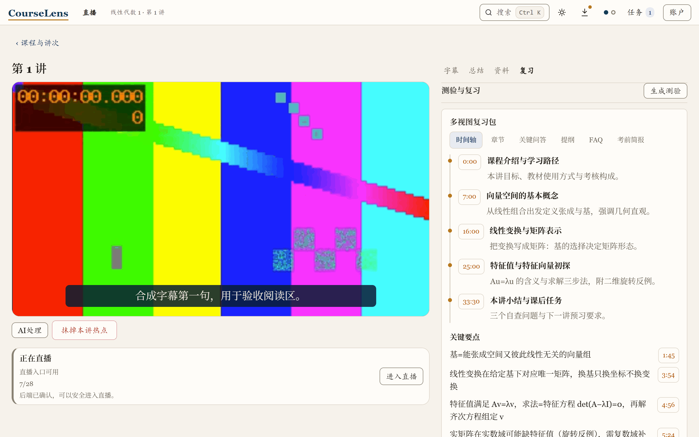

Windows 10 / 11 · 安装包约 24 MB
把录播变成字幕和复习材料
给复旦学生的 Windows 客户端：下课即看，不用等平台审核；晚自习看录播，字幕逐句自动跟上；备考前点一下，总结和章节就开始生成。数据默认留在你自己的电脑上。
直播转写为早期功能，可用性视网络与课程环境而定。

CourseLens 起初是我期末周自用的小工具，后来发现赶 due 的晚上同样好用，就整理成了现在这个客户端。数据留在你自己的电脑上，这条从第一行代码起没变过。
复习材料
备考夜把一讲从头捋：总结、章节、关键问答自动归到同一讲，课件 PDF 也能合成进来；生成后讲次卡上写「通过」或「N 处存疑」。点时间戳跳回原话。

图 二复习页全貌。图上两处金点可点，放大看对应区域。
提问
备考到深夜卡在一个概念，直接问：回答只基于这门课的字幕和课件，每条带时间戳。点引用看原始片段。
解释
看不懂的地方按 X 插一面「没听懂」小旗，AI 把那段讲清楚。懂了删旗。
还有直播字幕、校外看回放（多数情况不用设置）、Ctrl K 全文检索和课程记忆。
你的数据在哪里，谁能看到什么
课程、字幕、总结都存在你自己的电脑上；学号、密码和 API Key 加密存盘，文件里只有密文。AI 任务经端到端加密交给你自己的云端 Worker，链路上只有密文。没有遥测；客户端只连下面这 10 个主机。
| 主机 | 用途 |
|---|---|
| id.fudan.edu.cn webvpn.fudan.edu.cn icourse.fudan.edu.cn fdjwgl.fudan.edu.cn yjsxktest.fudan.sh.cn |
复旦统一身份认证、课程与课表数据（含研究生课表数据源）；webvpn 也是学校官方的校外访问通道 |
| github.com api.github.com |
GitHub 授权、你的专属仓库与学习任务 |
| api.deepseek.com | AI 校对与摘要（可选，使用你自己配置的 DeepSeek Key） |
| release-assets.githubusercontent.com objects.githubusercontent.com |
检查与下载应用更新 |
开着代理（VPN）也能正常用，互不干扰，网络设置一个都不用改；只是下载安装包、应用更新和云端学习任务需要够得着 GitHub，直连不稳时开着代理再试就行。
完整的数据边界与核对方法，见 README 的「安全与隐私架构」。
下载安装，一两分钟的事
Windows 10/11，安装包约 24 MB。顺利的话，一两分钟就能装完进入学习台。
点下面的按钮下载，双击安装；首次运行按引导用复旦统一身份认证登录，选你有权访问的课程就能开始。
首次安装若 Windows 弹出「已保护你的电脑」：点「更多信息」，再点「仍要运行」。
当前版本 0.1.0（Windows）。之后的更新在应用内完成，不用重跑安装包。
也有 macOS 测试版（体验版）：Apple Silicon 版，需 macOS 12 或更新版本，到发布页下载带「Pre-release」标记的安装包。它由 CI 自动构建，还没在真机上深度实测，遇到问题欢迎到 Issues 说一声。首次打开若被 macOS 拦一下，右键点 CourseLens 选「打开」，或到 系统设置 → 隐私与安全性 点「仍要打开」；数据规矩与 Windows 版一致，都留在你自己的电脑上。
CourseLens 0.1.0 · Windows
装之前可能想问
卸载了，我的数据会没吗？
默认不会。卸载时会问「要保留你的学习数据吗」，选「是」，笔记、字幕、进度原地不动，重装回来一切如旧；选「否」才是真删，不可恢复。
AI 功能必须要自己配 Key 吗？
不必须。不填 DeepSeek Key 也有高精度的非 AI 字幕回退；想用 AI 校对与问答，再在设置里填你自己的 Key。
遇到报错怎么办？
多数问题按任务中心里的中文提示重试或按步骤修复就行。解决不了去 Issues 反馈，每一条报障都有人回，说的是人话；贴截图前先脱敏，不要出现学号、密码和真实课程名。
macOS 测试版：装之前想知道的
适用的电脑：Apple Silicon（M 系列）Mac，系统要求 macOS 12 或更新版本；安装包在发布页的 macOS 测试版通道（带「Pre-release」标记），认准标记再下载。
为什么会被拦：安装包没有做 Apple 公证，那需要按年付费的开发者资质，测试版还没办。第一次打开：在访达里右键点 CourseLens 选「打开」，再点一次「打开」；如果系统没给这个选项（macOS 15 常见），到 系统设置 → 隐私与安全性，最下面能看到 CourseLens 被拦的记录，点「仍要打开」。之后就不会再拦了。安装包的 SHA256 校验和随发布附上，想核对的同学可以自行比对。
和 Windows 版一样的部分：数据都在你自己的电脑上，学号密码加密存进 macOS 钥匙串（第一次询问访问权限时点「允许」即可），没有遥测；字幕、总结、问答照旧在你的云端 Worker 上完成，你的电脑上没有 AI 模型。
测试版暂时没有：托盘最小化、应用内自动更新（有新版本请回发布页手动下载）、每日定时任务。遇到别的问题，去 Issues 说一声，每一条都有人回；贴截图前先脱敏，不要出现学号、密码和真实课程名。